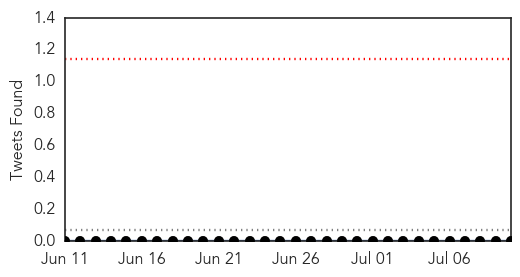
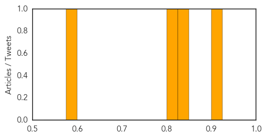

Meningitis
30-Day Web Trend
3 alerts, 0 warnings
30-Day Twitter Trend
0 alerts, 0 warnings

Article Locations
Article Confidences
Top Articles:
- 0.914
- The Terrifying Freshwater Infection That’s Killed Two in Two Weeks
- 0.831
- Niger: Epidemic (meningitis & measles) Emergency Plan of Action (EPoA) DREF Operation n° MDRNE015, Operations update n° 2 - Niger
- 0.809
- West Nile Virus-Positive Mosquito Found in Will County
- 0.591
- When to Go to the Emergency Room, Urgent Care, or Doctor's Office
Top Tweets:
-
No tweets found for Jul 10, 2015
Bubonic Plague
30-Day Web Trend
9 alerts, 0 warnings

30-Day Twitter Trend
0 alerts, 0 warnings

Article Locations

Article Confidences

Top Articles:
-
No articles found for Jul 10, 2015
Top Tweets:
-
No tweets found for Jul 10, 2015